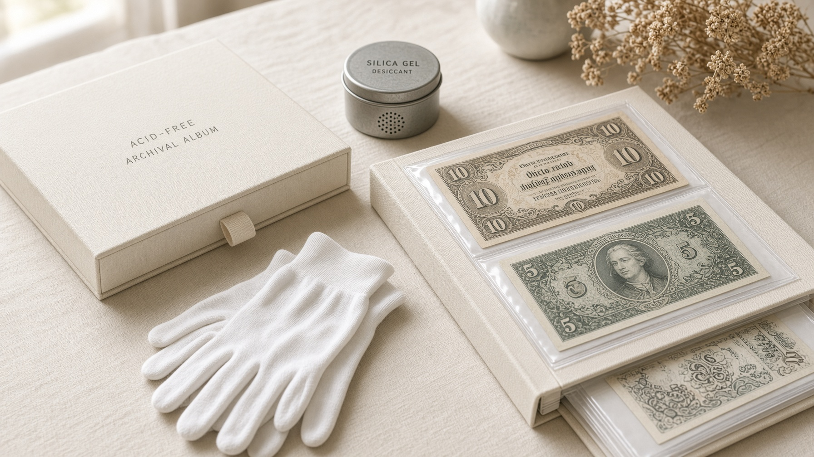

FAQ
常见问题
旧钞的价格没有统一标准。以下问题覆盖回收、估价、外国钞与到店资讯。仍不确定的话，欢迎直接 WhatsApp。
旧钞可以卖多少钱？+
旧钞的价格没有统一标准，需要根据年份、版本、品相、稀有程度及市场需求判断。建议提供实物照片，或带实物到吉隆坡 Sentul 实体店评估。收藏品价格会因市场情况而有所不同，实际价格需根据实物进行评估。
所有旧钞都有收藏价值吗？+
不一定。不同旧钞的市场需求与收藏价值差异很大。年代久远并不等于更值钱，发行数量、保存状态和收藏热度往往更关键。
哪里可以回收旧钞？+
Supreme 旧钞拍卖场位于吉隆坡 Sentul Point，提供旧钞回收及收藏品买卖相关服务。可先 WhatsApp 012-756 8819 预约，或于营业时间到店。
旧钱币可以估价吗？+
可以。钱币的年份、版本、保存状态及稀有程度等因素都会影响收藏市场价格。欢迎拍照咨询或到店评估。
外国旧钞可以收藏吗？+
可以。世界各地历史纸币都拥有不同的历史背景和收藏特色，我们也经常整理外国钞与中国老票等项目。
如何查询我的旧钞价值？+
请准备纸币的正面、背面及细节照片，并提供年份、面值、签名或特殊号码等基本资料。可使用本站估价表单，或直接 WhatsApp 联系。
营业时间与怎么找店？+
公开资料显示营业时间为每天 12:00–19:00。店面在 Sentul Point 的 MIXUE 楼上，进中间电梯按 1 楼。Waze 搜索 mixue sentul point。到访前建议先 WhatsApp 确认。
你们有做直播吗？+
有。我们会通过直播展示最新收藏品、马币专场与拍卖资讯。欢迎关注 Facebook「Supreme-旧钞拍卖场」与 Instagram @supremedailylive。
咨询
手上的旧钞，也许有一段不一样的故事
不确定手上的旧钞是什么？不知道旧钱币有没有收藏价值？想寻找特别的历史纸币？欢迎联系吉隆坡 Sentul 实体店，或直接 WhatsApp 咨询。